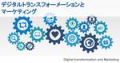

分析屋 のフィード

DXとマーケティングその36：DXでのビジネスモデルとマーケティング
分析屋
DX（デジタルトランスフォーメーション）とマーケティングとの関係を考えてくシリーズの36回目です。 今回も、DX関連書籍の一つである『DXナビゲーター』をもとに、マーケティングとの関係を分析していきま...
6日前

DXとマーケティングその35：DXでのデジタル戦略とマーケティング戦略の役割
分析屋
DX（デジタルトランスフォーメーション）とマーケティングとの関係を考えてくシリーズの35回目です。 今回も、DX関連書籍の一つである『DXナビゲーター』をもとに、マーケティングとの関係を分析していきま...
21日前
DXとマーケティングその34：DXでのデジタル化面の強化とマーケティング戦略の役割
分析屋
DX（デジタルトランスフォーメーション）とマーケティングとの関係を考えてくシリーズの34回目です。 今回も、DX関連書籍の一つである『DXナビゲーター』をもとに、マーケティングとの関係を分析していきま...
1ヶ月前
DXとマーケティングその33：DXでのデジタル化面の強化とマーケティング戦略の役割
分析屋
DX（デジタルトランスフォーメーション）とマーケティングとの関係を考えてくシリーズの33回目です。 今回も、DX関連書籍の一つである『DXナビゲーター』をもとに、マーケティングとの関係を分析していきま...
1ヶ月前
センサーデータの分析プロジェクトとは？ 担当社員に聞いてみました。【案件紹介 vol.1】
分析屋
こんにちは！ 分析屋の谷口です。 分析屋では、WEBアナリストをしつつ、noteで記事も書かせて頂いています。 続きをみる
2ヶ月前
DXとマーケティングその32：DXでのデジタル化戦略とマーケティング戦略の役割
分析屋
分析屋の下滝です。 DX（デジタルトランスフォーメーション）とマーケティングとの関係を考えてくシリーズの32回目です。 続きをみる
2ヶ月前
DX Q&A: 変革失敗の理由として多いのは何がありますか？
分析屋
『DXナビゲーター』によると、変革失敗の理由として多いのは、デジタル戦略が野心的すぎることより、控えめすぎることである、と述べられています。この事自体は、ボストンコンサルティンググループの以下の記事を...
2ヶ月前
DX Q&A: DXでのビジネスモデルの参考例を教えて下さい。
分析屋
DXの取り組みの成功事例で、ビジネスモデルの定義にもとづき、どのようにビジネスモデルが変わったのかが解説されることは多くないように思えます。 参考として『対デジタル・ディスラプター戦略』（と同書の続き...
2ヶ月前
DXとマーケティングその31：DX戦略とマーケティング戦略
分析屋
分析屋の下滝です。 DX（デジタルトランスフォーメーション）とマーケティングとの関係を考えてくシリーズの31回目です。 続きをみる
2ヶ月前
DXとマーケティングその30：『DXナビゲーター』とマーケティング
分析屋
分析屋の下滝です。 DX（デジタルトランスフォーメーション）とマーケティングの関係を考えてくシリーズの30回目です。 続きをみる
3ヶ月前
DXとマーケティングその29：デジタルサービスの開発と情報の分析と利用
分析屋
分析屋の下滝です。 DX（デジタルトランスフォーメーション）とマーケティングの関係を考えてくシリーズの29回目です。 続きをみる
4ヶ月前
DXとマーケティングその28：デジタルサービスの開発とマーケティングリサーチ
分析屋
分析屋の下滝です。 DX（デジタルトランスフォーメーション）とマーケティングの関係を考えてくシリーズの28回目です。 続きをみる
4ヶ月前
DXとマーケティングその27：デジタルサービスの開発と社内外データ
分析屋
分析屋の下滝です。 DX（デジタルトランスフォーメーション）とマーケティングの関係を考えてくシリーズの27回目です。 続きをみる
5ヶ月前
DXとマーケティングその26：デジタルサービスの開発とマーケティング情報ニーズの評価
分析屋
分析屋の下滝です。 DX（デジタルトランスフォーメーション）とマーケティングの関係を考えてくシリーズの26回目です。 続きをみる
5ヶ月前
【プレスリリース】ふるさと納税業務効率化ツールサービス提供の開始（🔄2021.10.15更新）
分析屋
分析屋が「外部に委託せずに最少人数でふるさと納税の受発注業務運用が行える効率化ツール」サービスを提供開始。 ＜１．サービス概要・利点＞ 続きをみる
5ヶ月前
DX事例分析その２：出光興産
分析屋
分析屋の下滝です。別連載でDXとマーケティングを書いています。 その連載では、ちょっと概念的・抽象的な内容になっているような気がするので、この連載では、DXの具体的な事例の分析の練習をしようと思ってい...
5ヶ月前
DXとマーケティングその25：デジタルサービスの開発とマーケティング情報システム
分析屋
分析屋の下滝です。 DX（デジタルトランスフォーメーション）とマーケティングの関係を考えてくシリーズの25回目です。 続きをみる
6ヶ月前
【ふるさと納税】業務効率化支援サービス一覧
分析屋
＜１．ふるさと納税「業務効率化ツール」＞ ふるさと納税受発注業務担当者向け効率化ツール提供サービス「ふるさと納税業務効率化ツール」のサービス提供を開始しました。ふるさと納税管理システムで多くの受注デー...
6ヶ月前
DXとマーケティングその24：デジタルサービスの開発とカスタマーインサイトチーム
分析屋
分析屋の下滝です。 DX（デジタルトランスフォーメーション）とマーケティングの関係を考えてくシリーズの24回目です。 続きをみる
6ヶ月前
DXとマーケティングその23：デジタルサービスの開発とカスタマーインサイト
分析屋
分析屋の下滝です。 DX（デジタルトランスフォーメーション）とマーケティングの関係を考えてくシリーズの第23回目です。 続きをみる
7ヶ月前
DXとマーケティングその22：デジタルサービスの開発と新製品開発
分析屋
分析屋の下滝です。 DX（デジタルトランスフォーメーション）とマーケティングの関係を考えてくシリーズの第22回目です。 続きをみる
7ヶ月前
DX事例分析その１：JAL
分析屋
分析屋の下滝です。別連載でDXとマーケティングを書いています。 その連載では、ちょっと概念的・抽象的な内容になっているような気がするので、この連載では、DXの具体的な事例の分析の練習をしようと思ってみ...
8ヶ月前
DXとマーケティングその21：シェアード・カスタマーインサイト
分析屋
分析屋の下滝です。 DX（デジタルトランスフォーメーション）とマーケティングの関係を考えてくシリーズの第21回目です。 続きをみる
8ヶ月前
DXとマーケティングその20：顧客は何を買うのかとDXの背景
分析屋
分析屋の下滝です。 DX（デジタルトランスフォーメーション）とマーケティングの関係を考えてくシリーズの第20回目です。 続きをみる
8ヶ月前
【自動発注】ふるさと納税発注業務の自動化
分析屋
分析屋の高橋です。 普段はふるさと納税を利用する立場ですが、 業務効率化の仕事をしているのでふるさと納税を運営されている方のご支援もしております。 続きをみる
9ヶ月前